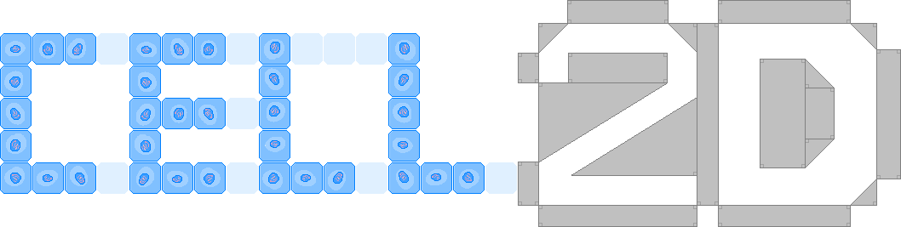

Cell2D is a free, open-source Java library for making 2D games, designed to simplify and speed up development by handling common organizational tasks. It is based on and incorporates Slick2D.
Features
- Convenient and precise event scheduling
- Compartmentalization of behaviors into states for both objects and the game as a whole
- Object-level control of the flow of time
- Efficient organization of objects in 2D space
- Overlap detection between points, lines, circles, and polygons
- Built-in basic solid-object collision system
- Simple management of graphics, music, and sound effects
- Image manipulation
Download
-
Cell2D (version 1.3.1) with source and Slick2D included
-
Changelog
-
Version 1.3.1
- Added a version of SpaceObject's getAnimInstance() method with no parameters.
- The Exception that is thrown when a CellGame's loading image fails to load has been made more descriptive.
-
Version 1.3.0
- The Assets class has been removed, as its function is performed more effectively by custom static variables in other classes.
- Support for MOD and XM audio files has been removed, as it was limited and unreliable to begin with.
- Cell2D's methods no longer throw SlickExceptions.
- Fixed a bug that prevented Viewports from rendering SpaceObjects despite having them in their field of view.
- Fixed a bug with the Sound class' stop() method.
-
Version 1.2.0
- Cell2D now uses fixed-point numbers in the form of fracunits to represent "continuous" length and time. See the Frac class for more details.
- SpaceThinkers no longer have beforeMovementActions(), as the existence of frameActions() makes them redundant.
-
Version 1.1.1
- Added Viewport's getWidth() and getHeight() methods.
- Viewport's edge setter methods return success or failure instead of throwing an exception if they fail.
-
Version 1.1.0
- Added SpaceState and its associated classes.
- Added CellVector.
- Added generic type slots for subclasses of CellGame in CellGameState, Thinker, and ThinkerState.
- Added more getter methods for the sizes of hidden collections.
-
Version 1.0.1
- Useless instances of the Assets class can no longer be created.
- Cell2D's version number is now printed to the console when a game starts.
-
Version 1.0.0
-
Older versions
Links
Contributors
- Programming
- Documentation
- Website design